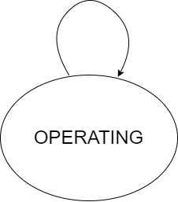

Glycol Dehydrator¶
Model Filename: Dehydrator.json
Dehydrator model
States¶
- OPERATING
Dehydrator operating normally

Fluid Flows¶
Site Definition Columns¶
- Facility ID
Facility of the equipment
- Unit ID
Identity of the equipment
- Component Count
Component counts of all the equipment that can leak
Emitters¶
- Dehydrator Component Leaks
Emitter Category: COMPONENT LEAK
Emission Category: FUGITIVE
Model Parameters:
- Component Leak Survey Frequency
Frequency of leak surveys (ex. LDAR)
Units: days
- Component Count
Component counts of all the equipment that can leak
- Component pLeak
Probability of leak of the number of components leaking at any time
- Factor Tag
A parameter to identify a set of activity and emission factors in Factors.csv file
- Leak GC Name
Gas composition pointer for leaks based on pLeak, MTTR, MTBF
- Dehydrator Still Vent
Emitter Category: VENT
Emission Category: VENTED
Model Parameters:
- Factor Tag
A parameter to identify a set of activity and emission factors in Factors.csv file
- Leak GC Name
Gas composition pointer for leaks based on pLeak, MTTR, MTBF
- Dehydrator Pneumatic Emissions
Emitter Category: PNEUMATIC EMISSION
Emission Category: VENTED
Model Parameters:
- Leak GC Name
Gas composition pointer for leaks based on pLeak, MTTR, MTBF
- Factor Tag
A parameter to identify a set of activity and emission factors in Factors.csv file
- Actuator Type
Actuator type of pneumatics on the facility
Units: Gas, Air, Electric
Dehydrator Reference¶
Dummy doc for dehydrators